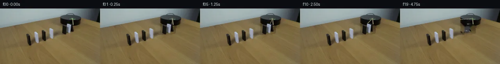

![首帧]()

Round 00
2026-11-06T01:22:02.054585+00:00像素候选变化代码 +309/−0inspection 更新
pixels e9d9e8acdff48188 · code d15cc7f1e464561a
查看本轮 generate.py 真实 diff
--- previous/generate.py
+++ current/generate.py
@@ -0,0 +1,309 @@
+"""PixelWorld case_0049 — rotating stick knocks a 7-domino B/W chain across a gap.
+
+Method (see METHOD.md): frame 00 is an exact copy of first_frame.png. Frames 01-19 are
+2x-supersampled local pixel renders over an inpainted static background: domino sprites
+cut from frame 0 are warped through a screen-space tipping transform (front face +
+thickness cap), the wooden stick is drawn analytically behind the domino layer and the
+green propeller sprite rotates about the hub. Only numpy/PIL/OpenCV/scipy are used.
+"""
+from pathlib import Path
+import numpy as np
+from PIL import Image, ImageDraw, ImageFilter
+from scipy import ndimage
+import cv2, math
+
+ROOT = Path(__file__).parent
+frame0 = np.array(Image.open(ROOT/'first_frame.png').convert('RGB'))
+H, W, _ = frame0.shape
+f = frame0.astype(np.float32)
+R, G, B = f[:,:,0], f[:,:,1], f[:,:,2]
+L = f.mean(2)
+
+# ---------------------------------------------------------------- geometry
+# chain far -> near; colour, loose extraction box, fall target
+DOM = [
+ dict(id='B', white=False, box=(178,191,40,62), P=(181.0,58.5), b=(184.0,58.5), t=(184.0,43.5), hw=2.6, tau=3.0),
+ dict(id='W', white=True, box=(167,188,37,66), P=(172.5,61.0), b=(177.0,61.0), t=(177.0,43.0), hw=4.2, tau=4.0),
+ dict(id='A', white=False, box=(154,175,40,69), P=(159.0,63.5), b=(164.5,63.5), t=(165.0,43.5), hw=5.0, tau=3.0),
+ dict(id='W2', white=True, box=(121,141,47,81), P=(126.0,73.5), b=(131.0,73.5), t=(131.0,54.5), hw=4.6, tau=4.0),
+ dict(id='C', white=False, box=(102,121,53,88), P=(106.0,80.5), b=(111.0,80.5), t=(111.0,59.5), hw=4.6, tau=4.0),
+ dict(id='W3', white=True, box=(82,103,56,93), P=(88.5,85.0), b=(93.5,85.0), t=(93.5,64.0), hw=4.6, tau=4.0),
+ dict(id='D', white=False, box=(62,89,61,98), P=(71.5,90.5), b=(75.5,93.0), t=(75.5,70.5), hw=4.8, tau=5.0),
+]
+bases = np.array([d['b'] for d in DOM])
+for i,d in enumerate(DOM):
+ if i < len(DOM)-1:
+ nxt = bases[i+1]-bases[i]
+ else:
+ nxt = bases[i]-bases[i-1]
+ d['dn'] = nxt/np.linalg.norm(nxt)
+ up = np.array(d['t'])-np.array(d['b'])
+ d['h'] = float(np.linalg.norm(up)); d['up'] = up/d['h']
+ # edge vector along bottom: perpendicular-ish to up, measured ~horizontal
+ d['edge'] = np.array([1.0, 0.18 if d['id'] in ('W3','D','W2','C') else 0.10])
+ d['edge'] /= np.linalg.norm(d['edge'])
+ # flat reach: perspective growth as tip approaches camera
+ yh = 18.0
+ dy = max(d['dn'][1], 0.0)
+ den = (d['b'][1]-yh) - d['h']*dy
+ d['L'] = d['h']*(d['b'][1]-yh)/max(den, 1.0)
+
+# ---------------------------------------------------------------- masks
+def class_mask(d):
+ x0,x1,y0,y1 = d['box']
+ pl, pg, pb, ll = R[y0:y1+1,x0:x1+1], G[y0:y1+1,x0:x1+1], B[y0:y1+1,x0:x1+1], L[y0:y1+1,x0:x1+1]
+ if d['white']:
+ m = (pb>pl+3) & (ll>95)
+ else:
+ m = ll<62
+ m = ndimage.binary_closing(m, iterations=1)
+ lm,nn = ndimage.label(m)
+ if nn > 1:
+ sizes = np.array([(lm==k).sum() for k in range(1,nn+1)])
+ m = lm == (int(np.argmax(sizes))+1)
+ out = np.zeros((H,W),bool); out[y0:y1+1,x0:x1+1] = m
+ return out
+
+cores = [class_mask(d) for d in DOM]
+
+# propeller / stick masks (grown residual pass below adds hub pixels)
+green = (G>R+15)&(G>B+15)&(G>88)
+beige = (R>110)&(R>B+25)&(abs(R-G)<28)&(L>80)
+stick0 = np.zeros((H,W),bool); stick0[28:44,184:188] = beige[28:44,184:188]
+# only the hanging stick column, not hub
+stick = np.zeros((H,W),bool)
+lm,nn = ndimage.label(stick0)
+if nn:
+ sizes=np.array([(lm==k).sum() for k in range(1,nn+1)])
+ stick = lm==(int(np.argmax(sizes))+1)
+prop_box = (172,198,22,32)
+prop_core = np.zeros((H,W),bool)
+prop_core[prop_box[2]:prop_box[3]+1, prop_box[0]:prop_box[1]+1] |= green[prop_box[2]:prop_box[3]+1, prop_box[0]:prop_box[1]+1]
+
+# -------------------------------- inpaint background (two residual passes)
+loose = np.zeros((H,W),bool)
+for d in DOM:
+ x0,x1,y0,y1 = d['box']
+ loose[y0:y1+1,x0:x1+1] = True
… diff truncated; 222 more lines …